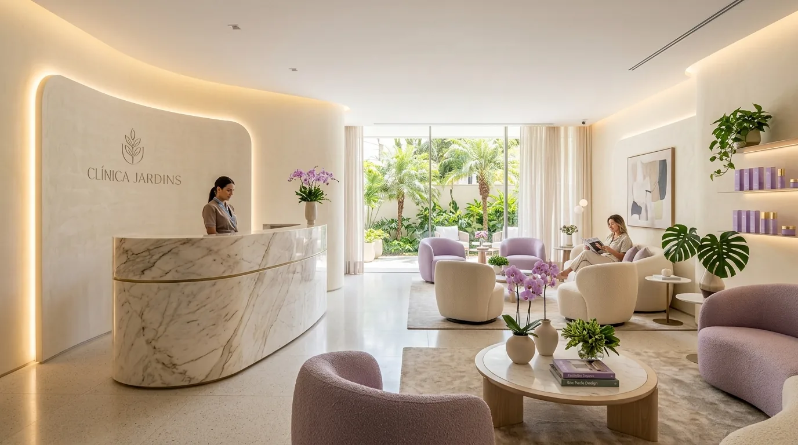
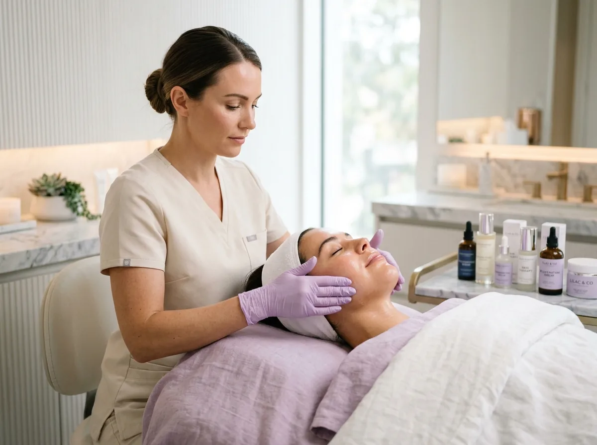
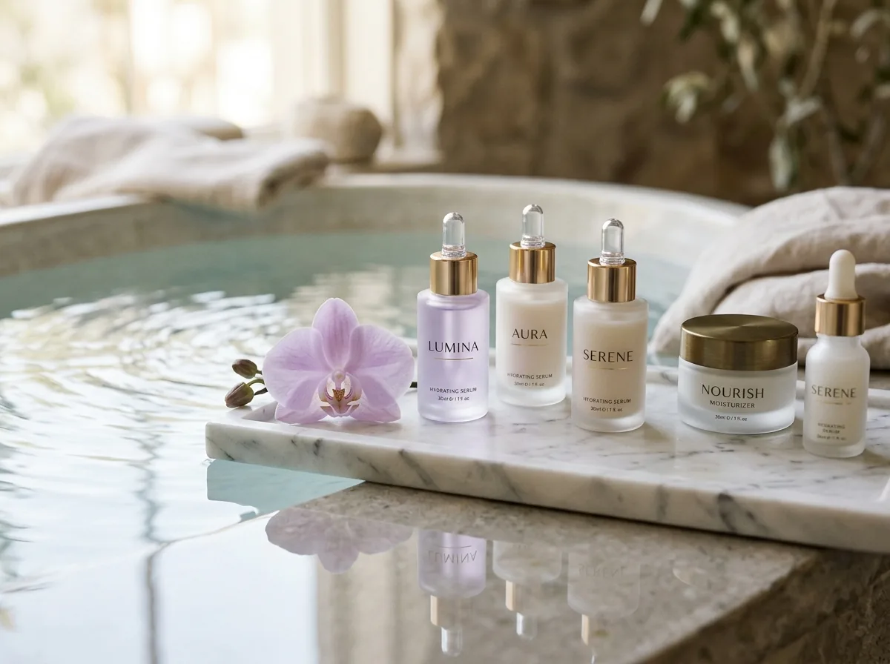
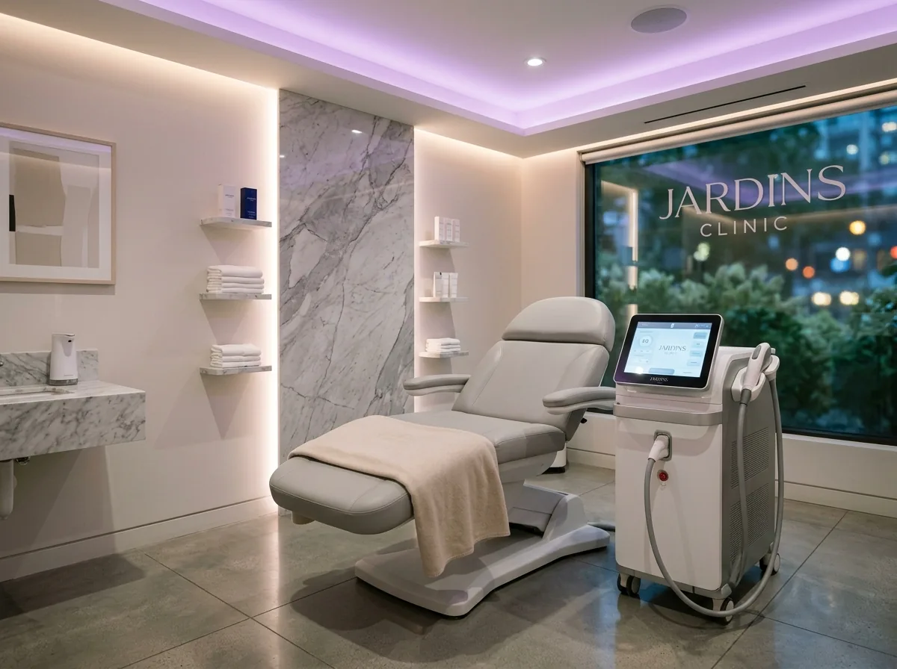

Atendimento Humanizado
Ambiente acolhedor, escuta atenta e profissionais qualificados para proporcionar uma experiência serena, confortável e pautada no diálogo transparente em cada sessão.
Avaliação individual e tratamentos faciais nos Jardins, São Paulo. Entenda as opções para sua pele, os cuidados e os próximos passos antes de decidir.

Somos uma clínica de estética dedicada ao cuidado com a pele, ao bem-estar e à autoestima. Nosso propósito é oferecer tratamentos personalizados, com atenção a cada detalhe e foco exclusivo nas necessidades individuais de cada cliente, sem excessos ou promessas irreais.
Ambiente acolhedor, escuta atenta e profissionais qualificados para proporcionar uma experiência serena, confortável e pautada no diálogo transparente em cada sessão.
Acreditamos que cada pele possui características únicas. Por isso, valorizamos condutas personalizadas, respeitando a anatomia natural, os hábitos de rotina e as expectativas reais.
Equipamentos de padrão ouro associados a cosmecêuticos de alta tolerância dérmica e procedência certificada, cumprindo protocolos rigorosos de biossegurança.
Conheça os 7 procedimentos estruturados da Clínica Demo. Informações objetivas, autossuficientes e com fundamentação clara para orientar a sua escolha.

O que é: Protocolo dermatológico de higienização profunda realizado na unidade dos Jardins com emoliência suave, vapor de ozônio, extração milimétrica com foco no conforto e fototerapia calmante.
Para quem é: Indicado para peles com impurezas acumuladas, cravos (comedões), oleosidade desregulada ou necessidade de renovação do manto hidrolipídico.
Como funciona: Desobstrui os folículos sem agredir os tecidos, aplicando máscara calmante rica em princípios bioidênticos que restauram a barreira cutânea.

Facial • Nutrição & ViçoO que é: Conjunto de protocolos personalizados para reposição hídrica profunda, uniformização de textura e nutrição celular com ativos biocompatíveis.
Para quem é: Pessoas que buscam combater o ressecamento, perda de luminosidade, pele opaca ou fragilizada por agressões climáticas e rotinas intensas.
Como funciona: Integração de esfoliação suave, infusão de antioxidantes (como vitaminas C e E) e séruns específicos conforme o biotipo dérmico mapeado.

Laser • Alta PrecisãoO que é: Procedimento tecnológico que atua diretamente no bulbo folicular com disparos controlados e sistema de resfriamento criogênico contínuo na pele.
Para quem é: Mulheres e homens que desejam redução progressiva dos pelos corporais ou faciais, bem como o alívio e prevenção da foliculite recorrente.
Como funciona: A energia luminosa seletiva atinge a raiz do pelo com proteção epidérmica proporcionada pela ponteira gelada, conferindo conforto térmico superior.
O que é: Métodos manuais especializados e tecnologias não-invasivas focados em drenagem linfática, contorno de silhueta e desintoxicação tecidual.
Para quem é: Indicado para quem lida com retenção de líquidos, sensação de pernas pesadas, inchaço abdominal e deseja melhorar o relevo cutâneo.
Como funciona: Manobras manuais precisas que estimulam o fluxo linfático e ativação circulatória, combinadas com cosméticos termogênicos ou criogênicos.
O que é: Protocolos avançados desenvolvidos para estimular a síntese endógena de colágeno e elastina, auxiliando na sustentação e viço da face e pescoço.
Para quem é: Recomendado para peles com sinais de flacidez inicial, linhas de expressão, perda de contorno mandibular ou afinamento da derme.
Como funciona: Aquecimento tecidual controlado e microestímulos que ativam os fibroblastos naturais sem romper a integridade da pele.
O que é: Abordagens terapêuticas combinadas voltadas ao gerenciamento de hipercromias (manchas solares, melasma leve), poros dilatados e marcas de acne.
Para quem é: Pessoas que demandam refinamento da textura e do tom cutâneo através de avaliação minuciosa e planejamento por etapas seguras.
Como funciona: Combinação orientada de peelings químicos superficiais, microagulhamento e luz direcionada, sempre adaptada à tolerância dérmica.
O que é: Planejamento anatômico centrado na harmonia e elegância das proporções faciais, evitando qualquer tipo de padronização ou artificialismo.
Para quem é: Pacientes que valorizam o refinamento de traços (lábios, queixo, malar ou mandíbula) mantendo a mímica facial totalmente espontânea.
Como funciona: Análise visagista fotográfica prévia, mapeamento das estruturas e aplicação de produtos reabsorvíveis de excelência internacional.
Entenda como cada detalhe de nossa operação é estruturado para garantir a tranquilidade do paciente antes, durante e após cada sessão.
Materiais descartáveis e instrumentais esterilizados em autoclave com controle biológico rigoroso a cada ciclo.
Mapeamento de histórico de saúde, alergias e medicamentos para assegurar que cada indicação seja plenamente adequada.
Instruções claras por escrito e canal contínuo via WhatsApp com nosso concierge para acompanhamento de evolução da pele.
Aparelhos de laser e eletroterapia submetidos a calibração preventiva periódica com registro regular perante a ANVISA.
Concebida como uma pausa restauradora na rotina agitada de São Paulo. Da chegada ao espaço com manobrista cortesia até o encerramento da sessão em cabines individuais, cada momento prioriza o seu conforto.
Momento inicial de diálogo com profissionais qualificados para mapear histórico cutâneo, hábitos e metas estéticas.
Apresentação do protocolo recomendado, esclarecendo duração, passos da sessão, produtos aplicados e expectativas reais.
Procedimento realizado com conforto térmico, técnicas com foco no confortoes e cosmecêuticos finos de alta tolerância.
Orientações práticas de cuidados em casa e canal direto para sanar qualquer dúvida durante a recuperação.
Responda a 3 perguntas breves para direcionar sua dúvida ao especialista correspondente em nossa equipe dos Jardins.
Selecione o objetivo que mais reflete seu momento:
Nossas sessões são planejadas por anatomia e necessidade:
Para calibrar o nível de acompanhamento e explicação:
Instalada em uma das vias mais tranquilas e arborizadas dos Jardins em São Paulo, a Clínica Demo foi desenhada para oferecer discrição, facilidade de acesso e privacidade absoluta.
Acesso facilitado pelas principais vias da Zona Sul e Oeste. Endereço completo fornecido após confirmação de horário para preservar a privacidade dos pacientes.
Respostas transparentes sobre funcionamento, preparo e segurança dos procedimentos na Clínica Demo Jardins.
Na sua primeira visita, dedicamos tempo exclusivo para ouvir seus objetivos, analisar o biotipo da sua pele e compreender sua rotina diária. A partir dessa anamnese detalhada, estruturamos uma conduta sob medida com etapas claras, sem prescrição de procedimentos desnecessários.
Nosso sistema a laser opera com resfriamento contínuo da ponteira antes e durante cada disparo, proporcionando conforto térmico significativamente maior do que métodos tradicionais. Durante a consulta prévia, calibramos o comprimento de onda e a energia de acordo com o fototipo e a densidade do pelo de cada pessoa.
Nossa filosofia rejeita transformações artificiais ou estereotipadas. Priorizamos o visagismo sutil: realçar ângulos naturais, apoiar a sustentação e valorizar traços já existentes, preservando plenamente a autenticidade e a mímica de cada expressão facial.
A imensa maioria de nossos procedimentos não-invasivos permite o retorno imediato às atividades normais no mesmo dia. Recomendamos apenas evitar exposição solar direta imediata, suspender ácidos esfoliantes nas primeiras 48h e manter a aplicação rigorosa do protetor solar recomendado.
Os agendamentos são realizados com nosso concierge através do WhatsApp (11 97197-9342). Para garantir que todas as cabines e profissionais estejam devidamente preparados, solicitamos aviso prévio de ao menos 24 horas caso necessite remarcar o seu atendimento.
Nossa equipe concierge está à disposição para tirar dúvidas, apresentar detalhes de cada protocolo e encontrar o melhor horário para você.
Antes de qualquer procedimento, a equipe avalia suas necessidades, explica riscos e cuidados e esclarece as alternativas. Esta seção demonstra como apresentar os profissionais responsáveis.